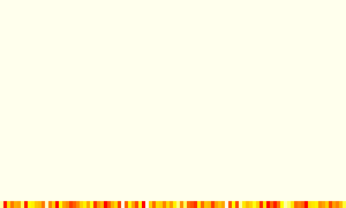

r-dev-lessons
Press →, scroll, or swipe to advance
Options
Made with Keydown

Lessons Learned in Developing R Packages
Yihui Xie
Department of Statistics, Iowa State University
Computational Statistics working group
Nov 2, 2011 (i.e. 20111102)
Q: How to Make Developers Happier?
A: You do not have to buy me beer, but please just do not let me see you use an R version released 2 years ago
animation: Start with Naive Ideas
the best time to write a package was 5 years ago, and...
## rotate the word 'Animation' for (i in 1:360) { plot(1, ann = FALSE, type = "n", axes = FALSE) text(1, 1, "Animation", srt = i, col = rainbow(360)[i], cex = 7 * i/360) Sys.sleep(0.01) }
animation: Demos and Examples
do not expect beginners to read source code, and do not expect experts to read documentation, either!
library(animation) demo('fire') # an application of image()

animation: Demos and Examples (cont'd)
examples are fast guides to usage
library(animation) ?animation ## this gives you an overview of the package
- images are supported in documentation in R 2.14 (use
\figure{}) - should be possible to create figures dynamically with Sweave in future
- honestly, I do not like the old style of R documentation at all
animation: Interfaces
- why
ani.start()andani.stop()becamesaveHTML() - use modern CSS elements (round corners and shadow, etc) rather than the old clunky styles
- make it appealing enough that the user cannot wait clicking the button!
animation: Automatic Configurations (cont'd)
saveGIF()uses ImageMagick or GraphicsMagick to convert images to GIF animations; need to know where they are installed- automatically search for ImageMagick in Windows Registry Hive using
readRegistry()(very likely to succeed) - instead of teaching what is the environmental variable
PATH(very frustrating thanks to “the system that is just this tall”)
animation: What Do I Regret Today?
- function names: now I'm more in favor of
foo_barthanfoo.bar(why? S3 generic functions) orfooBar(why?_is a clearer separator than capital letters) - built a Wiki site too early and it is too big to maintain (http://animation.yihui.name); I should have used tools like Sweave to build it dynamically (my new package knitr was partly motivated from here)
formatR: Computing on the Code
- R can compute on its own code:
parse()anddeparse() - the formatR package uses the side effect of them to reformat R code
- you give me
1+1and I return you1 + 1(what the heck is the difference?)
well, compare
for(k in 1:10){j=cos(sin(k)*k^2)+3;print(j-5)}
to
for (k in 1:10) { j = cos(sin(k) * k^2) + 3 print(j - 5) }
formatR: Motivation
- it is not the fault of people to create “long chunks of ill-formatted R code piled beside the Snedecor-Grad-Copier printer”
- why cannot a workman blame his tools?
- Stat579 students motivated the
tidy.eval()function
I frown on this in homeworks (score: 99.5):
> 1+1 [1] 2
tidy.eval() does this (score: 100):
1 + 1 ## [1] 2
Rd2roxygen: How I Regained Enthusiasm from roxygen
- I was once extremely frustrated at maintaining the animation package due to documentation
- idea of roxygen: source code and documentation are in the same file
##' This is title ##' @param a documentation for argument a ##' @param b documentation for argument b f = function(a, b) { ... }
- no longer needs to switch back and forth between
R/f.Randman/f.Rd - documentation is generated dynamically
Rd2roxygen: How to Escape the Inferno
- roxygen translates comments to Rd
- Rd2roxygen translates Rd back to roxygen comments, e.g.
from
\arguments{
\item{a}{documentation for argument a}
}to
##' @param a documentation for argument a- you maintain a single source from now on
Why Version Control?
- keep track of what you have been doing (accumulatively)
- a proof of hard work to your advisor
- save tears when your system crashes
- much much easier collaboration with others
- ...
- why GitHub? community, easy collaboration, ... (compare to R-Forge)
Why do I use = instead of <-?
- it is simpler to type (although Emacs/ESS binds
<-to_) - almost all other languages use
= - it does not confuse me at all (main reason why some people are against recommend
=)
Names: Important!
- can you remember the name
CvM2SL2TestorHumMeth27QCReport - if people cannot even remember your name, how are you supposed to be famous/popular?
- Hadley's principle: Google-able
- an unbeatable name: lubridate
Have Fun
- the fun package: games and fun
- animation: started from fun
- cranvas: interactive graphics is fun
- knitr (an alternative to Sweave): dynamic report is fun
- ...